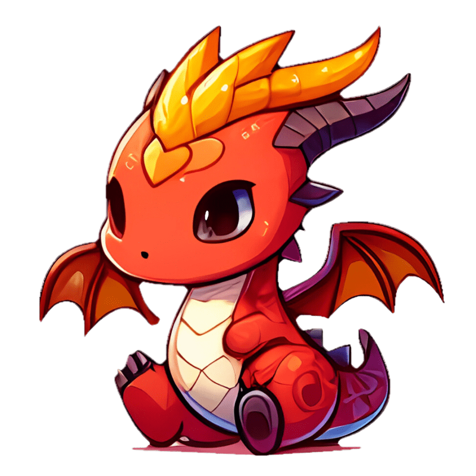
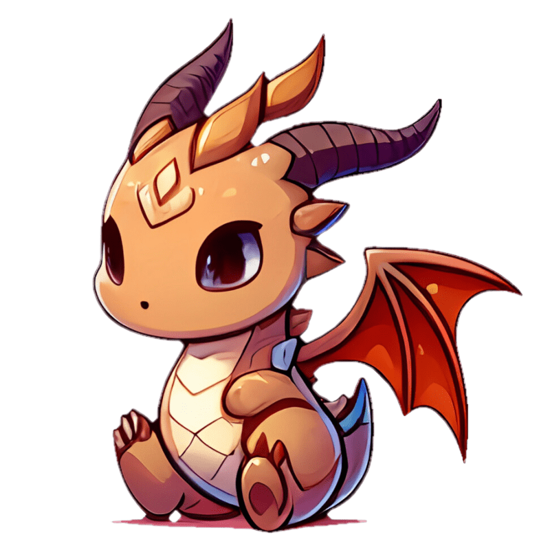
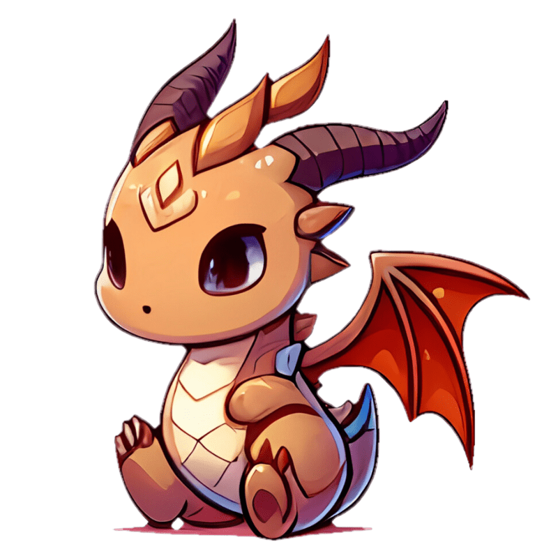
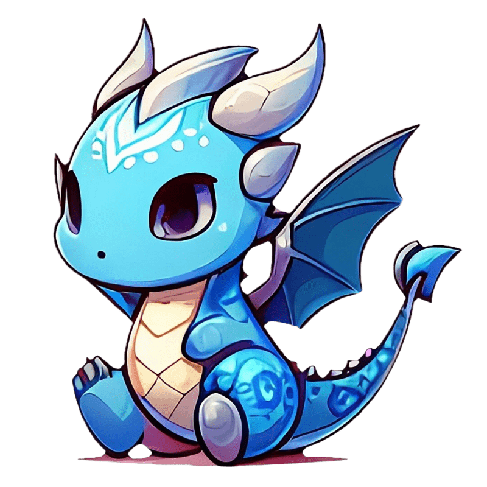
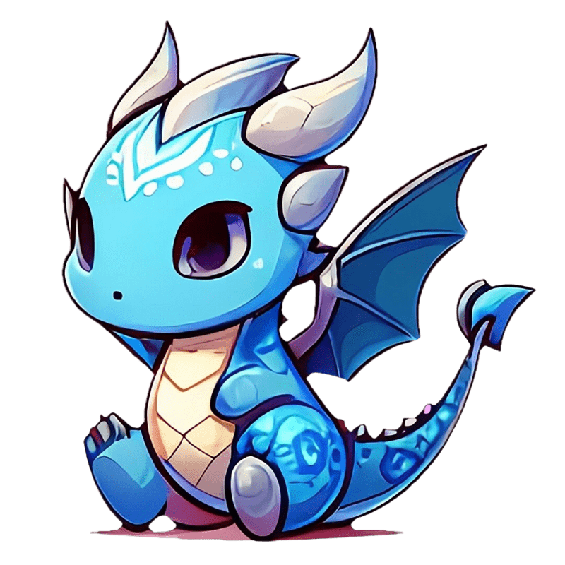
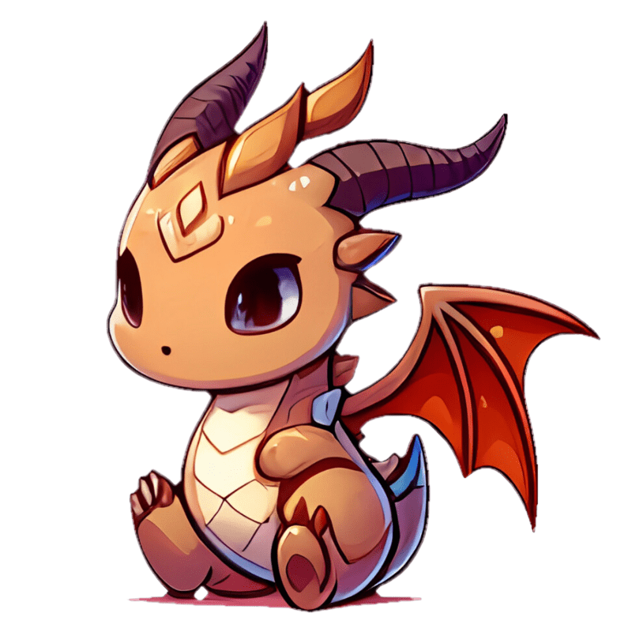
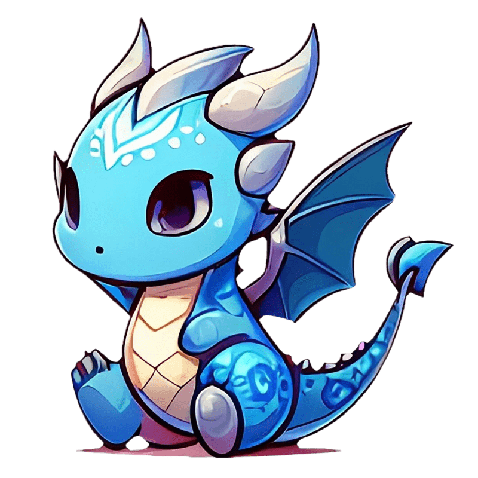

Steel Sentinel
Steel Sentinel adalah kelas naga yang memiliki koneksi erat dengan unsur logam. Mereka adalah penjaga yang tangguh dan kuat, diakui karena keberanian mereka di medan perang dan kemampuan mereka dalam memanipulasi logam untuk kebutuhan pertempuran. Mereka sering kali menjadi titik fokus pertahanan atau serangan dalam pertempuran, berdiri teguh seperti penjaga yang setia.

 

 



